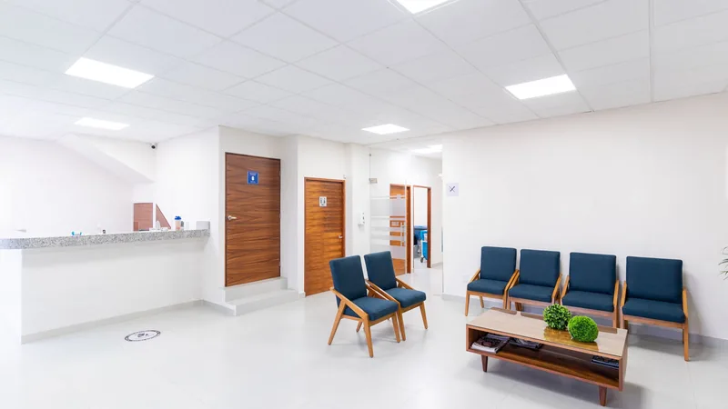

A neighbourhood clinic in Churchill Meadows
Churchill Medical Clinic is a walk-in and family practice on Artesian Drive, near the corner of Winston Churchill Boulevard and Highway 403, serving the western side of Mississauga.
Primary care without the wait for an appointment
Most medical problems are not emergencies, but they are not things that can wait three weeks either. A child with an ear infection, a chest infection that is not shifting, a sprained ankle, a prescription that has run out — these need seeing to within a day or two.
That is the gap a walk-in clinic fills. You come in when you need to be seen, a family physician examines you, and the problem gets dealt with. Because the clinic is also a family practice, anything that needs following up can be followed up here too.

Covered by OHIP
With a valid Ontario health card there is nothing to pay for an insured visit. Where a service is not insured, you will be told the fee before it is provided.
Three languages
Consultations in English, Arabic and Burmese, which matters in a neighbourhood as mixed as this one.
Accessible entrance
The clinic has a wheelchair-accessible entrance. Call ahead if you have a specific access need and the front desk will help.
Pharmacy next door
There is a pharmacy beside the clinic, so a prescription can usually be filled without a second journey.
All ages
Both physicians are certificants in family medicine and see patients of every age, from young children to older adults.
Six days a week
Open Monday to Friday until 7pm, and Saturday mornings and early afternoons. Closed on Sundays.
Where to find us
3050 Artesian Drive, Unit 6
Mississauga, Ontario L5M 7P5
The clinic sits in Churchill Meadows, on the western edge of Mississauga near the Winston Churchill Boulevard and Highway 403 interchange, close to the Halton boundary.
Opening hours
| Monday | 9:00am – 7:00pm |
|---|---|
| Tuesday | 9:00am – 7:00pm |
| Wednesday | 9:00am – 7:00pm |
| Thursday | 9:00am – 7:00pm |
| Friday | 9:00am – 7:00pm |
| Saturday | 9:00am – 3:00pm |
| Sunday | Closed |
Hours can change. Please call (905) 607-6495 before you travel.
We are on Artesian Drive
Walk in during opening hours, or call the front desk if you would like to check something first.